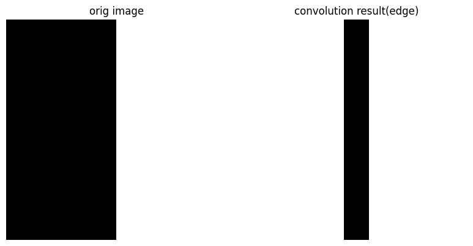
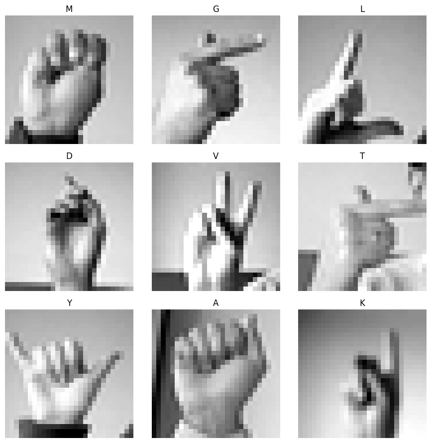

CNN 성능 개선 실습: 흑백 Sign Language MNIST 인식
CNN실습과 성능개선 고찰
Table of Contents
- 1. 강의 개요
- 2. 0단계: 도입 – 무엇을, 왜 만드는가
- 3. 1단계: CNN 이론 복습 – 이미지에는 왜 CNN인가
- 4. 2단계: 데이터 준비 – 흑백 Sign Language MNIST 불러오기와 전처리
- 5. 3단계: Baseline CNN 구축 – 기준점 세우기
- 6. 4단계: 기법 추가 ① Data Augmentation
- 7. 5단계: 기법 추가 ② Batch Normalization
- 8. 6단계: 기법 추가 ③ Dropout
- 9. 7단계: 기법 추가 ④ Transfer Learning (하이라이트)
- 10. 8단계: 종합 비교 – 표와 graph로 한눈에
- 11. 9단계: 모델 해석 – Grad-CAM 정적 시각화
- 12. 10단계: 종합 Interactive Demo (Gradio)
- 13. 11단계: 마무리 – 한계와 다음 단계
- 14. 부록: 차시 운영 제안
“”“#+PROPERTY: header-args:jupyter-python :session asl :kernel python3 :async yes :exports both”“”
1. 강의 개요
이 강의는 CNN(Convolutional Neural Network)을 복습하고, 성능을 개선하는 대표적인 방법들을 하나씩 누적해서 적용하면서 그 효과를 직접 측정하는 실습입니다. 주제는 Sign Language MNIST 인식입니다. 손으로 만든 ASL (American Sign Language) alphabet 모양을 \(28 \times 28\) 흑백(grayscale) 이미지로 담은 dataset을 사용해, 손 모양을 보고 어떤 글자인지 맞히는 model을 만듭니다.
흑백 dataset을 쓰는 이유는 용량이 작고 학습이 가볍기 때문입니다. 컬러 이미지(\(200 \times 200 \times 3\))는 한 장에 12만 개의 숫자가 필요하지만, 흑백 \(28 \times 28\) 이미지는 784개면 충분합니다. Colab 무료 환경에서도 빠르게 실행되고, 별도의 대용량 download도 필요 없습니다.
흐름은 다음과 같습니다.
- 가장 단순한 baseline CNN을 만들어 기준 정확도(accuracy)를 잰다.
- Data Augmentation -> Batch Normalization -> Dropout -> Transfer Learning 순서로 기법을 누적 적용하고, 매 단계 직전 model과 비교한다.
- 전체 결과를 표와 graph로 정리한다.
- Grad-CAM으로 model이 손의 어디를 보는지 눈으로 확인한다.
- Gradio로 만든 interactive demo에서 webcam 입력까지 통합 체험한다.
실행 환경은 Google Colab이며, GPU runtime을 권장합니다.
1.1. 흑백 버전의 특징과 주의점
- dataset이 이미지 파일이 아니라 CSV(픽셀값 표) 형태입니다. 각 행이 이미지 한 장이며, label 1개와 \(28 \times 28 = 784\) 개의 픽셀값으로 이루어집니다.
- 손동작이 필요한 J, Z는 정지 이미지로 표현되지 않아 dataset에서 제외되어 있습니다. 그래서 class는 24개입니다(label 번호는 0~25 중 9=J, 25=Z가 빠짐).
- 흑백·저해상도라 model 정확도는 금방 높아집니다. 대신 webcam 같은 실제 입력에서는 잘 틀리는데, 이 차이(domain gap)를 마지막에 함께 다룹니다.
2. 0단계: 도입 – 무엇을, 왜 만드는가
2.1. 학습 목표
- 수어(sign language)와 accessibility의 의미를 이해한다.
- 오늘 만들 결과물의 전체 그림을 미리 파악한다.
2.2. 무엇을 만드나
우리는 손으로 만든 ASL alphabet 모양을 담은 흑백 이미지를 입력으로 받아, 어떤 글자인지 예측하는 image classification model을 만듭니다. 마지막에는 webcam으로 직접 손을 찍어(흑백으로 변환해) model이 글자를 맞히고, 동시에 “손의 어느 부분을 보고 판단했는지”까지 보여주는 demo를 완성합니다.
2.3. ASL 지문자란
ASL alphabet은 손 모양 하나가 글자 하나에 대응하는 finger spelling 방식입니다. 대부분 정지된 손 모양으로 표현되기 때문에 사진 한 장으로 다룰 수 있습니다. 앞서 말했듯 J와 Z는 움직임이 필요해 이 dataset에는 없습니다.
2.4. Colab 환경 준비
GPU를 사용하면 training이 더 빠릅니다. Colab 상단 메뉴에서
런타임 -> 런타임 유형 변경 -> 하드웨어 가속기 -> GPU 를 선택하세요.
흑백 dataset은 가벼워서 CPU로도 충분히 돌아갑니다.
# GPU가 정상적으로 잡혔는지 확인한다.
import tensorflow as tf
# tf.config.list_physical_devices(device_type):
# - device_type: 'GPU' 또는 'CPU' 같은 device 종류 문자열
# - 해당 종류의 사용 가능한 device 목록을 반환한다.
gpus = tf.config.list_physical_devices('GPU')
print("TensorFlow version:", tf.__version__)
print("사용 가능한 GPU:", gpus)
TensorFlow version: 2.20.0 사용 가능한 GPU: [PhysicalDevice(name='/physical_device:GPU:0', device_type='GPU')]
3. 1단계: CNN 이론 복습 – 이미지에는 왜 CNN인가
3.1. 학습 목표
- Convolution과 Pooling의 역할을 다시 이해한다.
- 왜 일반 fully-connected network보다 CNN이 이미지에 적합한지 설명할 수 있다.
3.2. 이미지를 숫자로 본다는 것
컴퓨터에게 이미지는 숫자의 격자입니다. 흑백 이미지는 channel이 1개이므로, 가로 \(W\), 세로 \(H\) 픽셀(pixel)이라면 \(H \times W \times 1\) 개의 숫자로 이루어집니다. 각 숫자는 보통 0(검정)부터 255(흰색) 사이의 밝기 값입니다. 이번 dataset은 \(28 \times 28 \times 1 = 784\) 개의 숫자가 이미지 한 장을 이룹니다.
3.3. 왜 fully-connected network로는 부족한가
\(28 \times 28\) 이미지를 일렬로 펴서 일반 신경망에 넣으면 입력 하나가 784개의 숫자가 됩니다. 흑백 저해상도라 컬러보다는 작지만, 픽셀을 일렬로 펴는 순간 “옆 픽셀과 가깝다”는 공간 정보가 사라진다는 본질적 문제는 똑같습니다. 손 모양처럼 공간 패턴 이 핵심인 문제에서는 이 정보가 매우 중요합니다.
3.4. Convolution: 작은 filter로 국소 패턴을 본다
CNN은 작은 크기의 filter(kernel)를 이미지 위에서 미끄러뜨리며(sliding) 국소적인 패턴을 찾습니다. 같은 filter를 이미지 전체에 재사용하므로 parameter 수가 적고, 위치가 바뀌어도 같은 특징을 잡아냅니다.
2차원 convolution은 다음과 같이 정의됩니다. 입력을 \(I\), filter를 \(K\) (크기 \(k \times k\)), 출력 feature map을 $S$라 하면,
\[ S(i, j) = \sum_{m=0}^{k-1} \sum_{n=0}^{k-1} I(i + m,\; j + n)\, K(m, n) + b \]
여기서 $b$는 bias입니다. 직관적으로는 filter가 덮은 영역과 filter 값을 서로 곱해 더한 값이 출력 한 칸이 됩니다.
출력 feature map의 크기는 다음 식으로 결정됩니다. 입력 크기 \(W\), filter 크기 \(k\), padding \(P\), stride $S$일 때,
\[ W_{\text{out}} = \left\lfloor \frac{W - k + 2P}{S} \right\rfloor + 1 \]
3.5. 활성화 함수와 비선형성
convolution 결과에는 보통 ReLU(Rectified Linear Unit) activation을 적용합니다.
\[ \mathrm{ReLU}(x) = \max(0,\; x) \]
이 비선형 함수가 없으면 layer를 아무리 쌓아도 결국 하나의 선형 변환과 같아져서 복잡한 패턴을 배우지 못합니다.
3.6. Pooling: 크기를 줄이고 위치 변화에 강해진다
Max pooling은 작은 영역에서 가장 큰 값만 남깁니다. feature map 크기가 줄어 계산이 가벼워지고, 손의 위치가 조금 달라져도 같은 특징을 인식하는 translation invariance를 얻습니다.
\[ S(i, j) = \max_{0 \le m, n < p} I(i \cdot s + m,\; j \cdot s + n) \]
여기서 $p$는 pooling window 크기, $s$는 stride입니다.
3.7. 작은 데모: filter 하나 적용해보기
아래 code는 간단한 흑백 이미지에 edge를 강조하는 filter를 하나 적용해 convolution의 효과를 눈으로 보여줍니다.
import numpy as np
import matplotlib.pyplot as plt
from scipy.signal import convolve2d
# 간단한 흑백 이미지(왼쪽은 어둡고 오른쪽은 밝은 세로 경계)를 만든다.
img = np.zeros((20, 20))
img[:, 10:] = 1.0 # 오른쪽 절반을 밝게
# 세로 edge를 검출하는 3x3 filter (Sobel 계열)
kernel = np.array([[-1, 0, 1],
[-2, 0, 2],
[-1, 0, 1]])
# convolve2d(in1, in2, mode):
# - in1: 입력 2차원 배열(이미지)
# - in2: filter(kernel)
# - mode='valid': padding 없이 filter가 완전히 겹치는 영역만 계산
feature_map = convolve2d(img, kernel, mode='valid')
fig, ax = plt.subplots(1, 2, figsize=(8, 4))
ax[0].imshow(img, cmap='gray'); ax[0].set_title("orig image")
ax[1].imshow(feature_map, cmap='gray'); ax[1].set_title("convolution result(edge)")
for a in ax: a.axis('off')
plt.tight_layout()
plt.show()

위 결과에서 경계(edge)가 있던 위치만 값이 크게 나타나는 것을 볼 수 있습니다. filter가 “세로 경계”라는 국소 패턴을 잡아낸 것입니다.
4. 2단계: 데이터 준비 – 흑백 Sign Language MNIST 불러오기와 전처리
4.1. 학습 목표
- CSV 픽셀 형식의 dataset 구조를 이해한다.
- CSV를 이미지(\(28 \times 28 \times 1\))로 되돌리는 reshape, normalization, train/validation 처리를 안다.
4.2. 데이터셋 설명
Sign Language MNIST는 두 개의 CSV 파일(sign_mnist_train.csv,
sign_mnist_test.csv)로 제공됩니다. 각 행의 첫 번째 열은 label (글자
번호)이고, 나머지 784개 열(pixel1 ~ pixel784)이 \(28 \times 28\) 흑백
이미지의 픽셀값(0~255)입니다. 전체 용량은 약 60MB 정도로 가볍습니다.
4.3. Kaggle에서 데이터 받기
Colab에서 Kaggle dataset을 받으려면 Kaggle API token(kaggle.json)이
필요합니다. Kaggle 계정의 Settings -> API -> Create New Token 에서
받을 수 있습니다.
# kaggle.json 파일을 Colab에 업로드한 뒤 실행한다.
from google.colab import files
# files.upload():
# - 로컬 PC의 파일을 Colab으로 업로드하는 dialog를 띄운다.
# - 반환값은 {파일이름: 내용(bytes)} 형태의 dict
uploaded = files.upload() # 여기서 kaggle.json 선택
import os
# kaggle.json을 적절한 위치로 옮기고 권한을 설정한다.
os.makedirs('/root/.kaggle', exist_ok=True)
os.rename('kaggle.json', '/root/.kaggle/kaggle.json')
os.chmod('/root/.kaggle/kaggle.json', 0o600) # 본인만 읽기/쓰기 가능하게
# Kaggle dataset 다운로드 (datamunge/sign-language-mnist)
# -d: dataset 식별자, -p: 저장 경로, --unzip: 받은 뒤 자동 압축 해제
!kaggle datasets download -d datamunge/sign-language-mnist -p /content/asl --unzip
4.4. CSV를 읽어 이미지 배열로 변환
colab
import numpy as np import pandas as pd TRAIN_CSV = "/content/asl/sign_mnist_train.csv" TEST_CSV = "/content/asl/sign_mnist_test.csv" # pd.read_csv(path): CSV 파일을 표(DataFrame)로 읽는다. train_df = pd.read_csv(TRAIN_CSV) test_df = pd.read_csv(TEST_CSV) print("train 모양:", train_df.shape) # (행 수, 785) -> label 1 + pixel 784 print(train_df.iloc[:3, :6]) # 앞부분 일부만 미리보기--------------------------------------------------------------------------- FileNotFoundError Traceback (most recent call last) Cell In[74], line 8 5 TEST_CSV = "/content/asl/sign_mnist_test.csv" 7 # pd.read_csv(path): CSV 파일을 표(DataFrame)로 읽는다. ----> 8 train_df = pd.read_csv(TRAIN_CSV) 9 test_df = pd.read_csv(TEST_CSV) 11 print("train 모양:", train_df.shape) # (행 수, 785) -> label 1 + pixel 784 File ~/.virtualenvs/ml/lib/python3.12/site-packages/pandas/io/parsers/readers.py:1026, in read_csv(filepath_or_buffer, sep, delimiter, header, names, index_col, usecols, dtype, engine, converters, true_values, false_values, skipinitialspace, skiprows, skipfooter, nrows, na_values, keep_default_na, na_filter, verbose, skip_blank_lines, parse_dates, infer_datetime_format, keep_date_col, date_parser, date_format, dayfirst, cache_dates, iterator, chunksize, compression, thousands, decimal, lineterminator, quotechar, quoting, doublequote, escapechar, comment, encoding, encoding_errors, dialect, on_bad_lines, delim_whitespace, low_memory, memory_map, float_precision, storage_options, dtype_backend) 1013 kwds_defaults = _refine_defaults_read( 1014 dialect, 1015 delimiter, (...) 1022 dtype_backend=dtype_backend, 1023 ) 1024 kwds.update(kwds_defaults) -> 1026 return _read(filepath_or_buffer, kwds) File ~/.virtualenvs/ml/lib/python3.12/site-packages/pandas/io/parsers/readers.py:620, in _read(filepath_or_buffer, kwds) 617 _validate_names(kwds.get("names", None)) 619 # Create the parser. --> 620 parser = TextFileReader(filepath_or_buffer, **kwds) 622 if chunksize or iterator: 623 return parser File ~/.virtualenvs/ml/lib/python3.12/site-packages/pandas/io/parsers/readers.py:1620, in TextFileReader.__init__(self, f, engine, **kwds) 1617 self.options["has_index_names"] = kwds["has_index_names"] 1619 self.handles: IOHandles | None = None -> 1620 self._engine = self._make_engine(f, self.engine) File ~/.virtualenvs/ml/lib/python3.12/site-packages/pandas/io/parsers/readers.py:1880, in TextFileReader._make_engine(self, f, engine) 1878 if "b" not in mode: 1879 mode += "b" -> 1880 self.handles = get_handle( 1881 f, 1882 mode, 1883 encoding=self.options.get("encoding", None), 1884 compression=self.options.get("compression", None), 1885 memory_map=self.options.get("memory_map", False), 1886 is_text=is_text, 1887 errors=self.options.get("encoding_errors", "strict"), 1888 storage_options=self.options.get("storage_options", None), 1889 ) 1890 assert self.handles is not None 1891 f = self.handles.handle File ~/.virtualenvs/ml/lib/python3.12/site-packages/pandas/io/common.py:873, in get_handle(path_or_buf, mode, encoding, compression, memory_map, is_text, errors, storage_options) 868 elif isinstance(handle, str): 869 # Check whether the filename is to be opened in binary mode. 870 # Binary mode does not support 'encoding' and 'newline'. 871 if ioargs.encoding and "b" not in ioargs.mode: 872 # Encoding --> 873 handle = open( 874 handle, 875 ioargs.mode, 876 encoding=ioargs.encoding, 877 errors=errors, 878 newline="", 879 ) 880 else: 881 # Binary mode 882 handle = open(handle, ioargs.mode) FileNotFoundError: [Errno 2] No such file or directory: '/content/asl/sign_mnist_train.csv'local
import numpy as np import pandas as pd TRAIN_CSV = "/home/minux/temp/sign_mnist_train.csv" TEST_CSV = "/home/minux/temp/sign_mnist_test.csv" # pd.read_csv(path): CSV 파일을 표(DataFrame)로 읽는다. train_df = pd.read_csv(TRAIN_CSV) test_df = pd.read_csv(TEST_CSV) print("train 모양:", train_df.shape) # (행 수, 785) -> label 1 + pixel 784 print(train_df.iloc[:3, :6]) # 앞부분 일부만 미리보기
def df_to_xy(df):
"""DataFrame을 이미지 배열 X와 label y로 분리한다.
인자:
- df: label 열 + pixel1~pixel784 열을 가진 DataFrame
반환:
- X: (N, 28, 28, 1) float32 이미지 배열
- y: (N,) 정수 label 배열
"""
# 'label' 열을 떼어 y로, 나머지를 픽셀값으로 사용
y = df['label'].to_numpy()
# values: DataFrame을 numpy 배열로. label 열 제외하고 784개 픽셀
pixels = df.drop(columns=['label']).to_numpy(dtype='float32')
# reshape(-1, 28, 28, 1): 일렬 784픽셀을 28x28 흑백 이미지로 되돌림
# -1은 "행 수는 자동 계산"을 의미
X = pixels.reshape(-1, 28, 28, 1)
return X, y
X_train_full, y_train_full = df_to_xy(train_df)
X_test, y_test = df_to_xy(test_df)
print("X_train_full:", X_train_full.shape, " X_test:", X_test.shape)
print("label 범위:", y_train_full.min(), "~", y_train_full.max())
X_train_full: (27455, 28, 28, 1) X_test: (7172, 28, 28, 1) label 범위: 0 ~ 24
4.5. label 정리와 class 이름
J(9), Z(25)가 빠져 있어 label 번호가 연속적이지 않습니다. 모델이 다루기 쉽도록 0부터 시작하는 연속 index로 다시 매핑합니다.
# 실제 등장하는 label들만 모아 정렬 (예: 0~24 중 9 제외 등)
unique_labels = np.unique(y_train_full)
NUM_CLASSES = len(unique_labels)
# 원래 label 번호 -> 0부터 시작하는 연속 index 로 바꾸는 사전
label_to_idx = {int(lab): i for i, lab in enumerate(unique_labels)}
# index -> 알파벳 글자 (A=0, B=1, ... 원래 label 번호 기준)
idx_to_letter = {i: chr(ord('A') + int(lab)) for lab, i in label_to_idx.items()}
def remap(y):
"""원래 label 배열을 0부터 시작하는 연속 index로 바꾼다."""
return np.array([label_to_idx[int(v)] for v in y])
y_train_full = remap(y_train_full)
y_test = remap(y_test)
class_names = [idx_to_letter[i] for i in range(NUM_CLASSES)]
print("class 개수:", NUM_CLASSES)
print("class 목록:", class_names)
class 개수: 24 class 목록: ['A', 'B', 'C', 'D', 'E', 'F', 'G', 'H', 'I', 'K', 'L', 'M', 'N', 'O', 'P', 'Q', 'R', 'S', 'T', 'U', 'V', 'W', 'X', 'Y']
4.6. train / validation 나누기
from sklearn.model_selection import train_test_split
# train_test_split(X, y, test_size, random_state, stratify):
# - test_size=0.2: 20%를 validation으로 분리
# - random_state: 분할을 재현 가능하게 하는 난수 seed
# - stratify=y: 각 class 비율을 train/val에 동일하게 유지
X_train, X_val, y_train, y_val = train_test_split(
X_train_full, y_train_full,
test_size=0.2, random_state=123, stratify=y_train_full)
print("train:", X_train.shape, " val:", X_val.shape)
train: (21964, 28, 28, 1) val: (5491, 28, 28, 1)
4.7. 샘플 이미지 살펴보기
import matplotlib.pyplot as plt
plt.figure(figsize=(9, 9))
for i in range(9):
plt.subplot(3, 3, i + 1)
# (28,28,1) -> (28,28)로 줄여서 흑백 표시
plt.imshow(X_train[i].reshape(28, 28), cmap='gray')
plt.title(class_names[y_train[i]])
plt.axis('off')
plt.tight_layout()
plt.show()

4.8. 공통 상수와 normalization layer
from tensorflow.keras import layers
INPUT_SHAPE = (28, 28, 1) # 흑백 이미지 입력 형태
BATCH_SIZE = 128
# layers.Rescaling(scale): 입력에 scale을 곱한다.
# 1/255를 곱해 0~255 픽셀값을 0~1 범위로 normalization 한다.
normalization_layer = layers.Rescaling(1.0 / 255)
5. 3단계: Baseline CNN 구축 – 기준점 세우기
5.1. 학습 목표
- 가장 단순한 CNN을 직접 쌓아 본다.
- 이후 모든 비교의 출발점이 되는 baseline accuracy를 기록한다.
5.2. Baseline model 정의
별다른 기법 없이 Convolution + Pooling을 몇 번 쌓고, 마지막에 fully-connected layer로 분류하는 가장 기본적인 구조입니다. 흑백 입력이라 첫 Conv의 입력 channel이 1개라는 점만 컬러와 다릅니다.
from tensorflow import keras
from tensorflow.keras import layers
def build_baseline():
"""가장 단순한 baseline CNN을 만들어 반환한다. 인자 없음."""
model = keras.Sequential([
layers.Input(shape=INPUT_SHAPE), # 입력 크기 (28,28,1)
normalization_layer, # 0~1 normalization
# Conv2D(filters, kernel_size, activation, padding):
# - filters: 출력 channel 수(filter 개수)
# - kernel_size: filter 크기 (3 -> 3x3)
# - activation: 활성화 함수
# - padding='same': 출력 크기를 입력과 같게 유지
layers.Conv2D(32, 3, activation='relu', padding='same'),
layers.MaxPooling2D(), # 2x2 영역 최댓값 -> 28->14
layers.Conv2D(64, 3, activation='relu', padding='same'),
layers.MaxPooling2D(), # 14 -> 7
layers.Flatten(), # 3차원 feature map을 1차원으로
layers.Dense(128, activation='relu'),
# 마지막 Dense: class 개수만큼 출력, softmax로 확률 분포 생성
layers.Dense(NUM_CLASSES, activation='softmax'),
])
return model
baseline = build_baseline()
baseline.summary() # model 구조와 parameter 수를 표로 출력
Model: "sequential_10" ┏━━━━━━━━━━━━━━━━━━━━━━━━━━━━━━━━━┳━━━━━━━━━━━━━━━━━━━━━━━━┳━━━━━━━━━━━━━━━┓ ┃ Layer (type) ┃ Output Shape ┃ Param # ┃ ┡━━━━━━━━━━━━━━━━━━━━━━━━━━━━━━━━━╇━━━━━━━━━━━━━━━━━━━━━━━━╇━━━━━━━━━━━━━━━┩ │ rescaling_2 (Rescaling) │ (None, 28, 28, 1) │ 0 │ ├─────────────────────────────────┼────────────────────────┼───────────────┤ │ conv2d_20 (Conv2D) │ (None, 28, 28, 32) │ 320 │ ├─────────────────────────────────┼────────────────────────┼───────────────┤ │ max_pooling2d_20 (MaxPooling2D) │ (None, 14, 14, 32) │ 0 │ ├─────────────────────────────────┼────────────────────────┼───────────────┤ │ conv2d_21 (Conv2D) │ (None, 14, 14, 64) │ 18,496 │ ├─────────────────────────────────┼────────────────────────┼───────────────┤ │ max_pooling2d_21 (MaxPooling2D) │ (None, 7, 7, 64) │ 0 │ ├─────────────────────────────────┼────────────────────────┼───────────────┤ │ flatten_10 (Flatten) │ (None, 3136) │ 0 │ ├─────────────────────────────────┼────────────────────────┼───────────────┤ │ dense_22 (Dense) │ (None, 128) │ 401,536 │ ├─────────────────────────────────┼────────────────────────┼───────────────┤ │ dense_23 (Dense) │ (None, 24) │ 3,096 │ └─────────────────────────────────┴────────────────────────┴───────────────┘ Total params: 423,448 (1.62 MB) Trainable params: 423,448 (1.62 MB) Non-trainable params: 0 (0.00 B)
5.3. Loss function과 optimizer
여러 class 중 하나를 고르는 문제이므로 categorical cross-entropy를 사용합니다. label이 정수 index이므로 sparse 버전을 씁니다. 정답 class에 부여한 확률 $\hat{p}_y$가 높을수록 loss가 작아집니다.
\[ \mathcal{L} = -\log \hat{p}_{y} \]
def compile_model(model):
"""model에 optimizer, loss, metric을 설정한다.
인자:
- model: compile할 keras model
"""
# model.compile(optimizer, loss, metrics):
# - optimizer: weight를 갱신하는 방법 (adam은 무난한 기본 선택)
# - loss: 최소화할 손실 함수
# - metrics: 학습 중 함께 관찰할 평가지표
model.compile(
optimizer='adam',
loss='sparse_categorical_crossentropy',
metrics=['accuracy'])
return model
compile_model(baseline)
5.4. 공정한 비교를 위한 약속
누적 비교가 의미를 가지려면 변수를 통제 해야 합니다. 아래 값들은 모든 단계에서 동일하게 유지합니다. 그래야 정확도 변화가 “기법” 때문인지 “다른 설정” 때문인지 헷갈리지 않습니다.
EPOCHS = 10 # 모든 model을 동일하게 10 epoch 학습
# 결과를 한곳에 모아 나중에 비교 표/graph로 만든다.
results = {} # 예: results['1_baseline'] = 0.95
histories = {} # 학습 곡선을 그리기 위한 history 저장
5.5. Baseline 학습 및 기준 정확도 기록
# model.fit(x, y, validation_data, epochs, batch_size):
# - x, y: 학습용 입력과 label
# - validation_data: 매 epoch 후 평가할 (입력, label) 쌍
# - epochs: 전체 데이터를 몇 번 반복 학습할지
# - batch_size: 한 번에 처리할 sample 수
hist = baseline.fit(X_train, y_train,
validation_data=(X_val, y_val),
epochs=EPOCHS, batch_size=BATCH_SIZE)
# 마지막 epoch의 validation accuracy를 기준값으로 저장
results['1_baseline'] = hist.history['val_accuracy'][-1]
histories['1_baseline'] = hist.history
print("Baseline validation accuracy:", results['1_baseline'])
Epoch 1/10 172/172 ━━━━━━━━━━━━━━━━━━━━ 5s 15ms/step - accuracy: 0.4922 - loss: 1.7278 - val_accuracy: 0.8113 - val_loss: 0.6150 Epoch 2/10 172/172 ━━━━━━━━━━━━━━━━━━━━ 0s 3ms/step - accuracy: 0.9023 - loss: 0.3327 - val_accuracy: 0.9537 - val_loss: 0.1711 Epoch 3/10 172/172 ━━━━━━━━━━━━━━━━━━━━ 0s 3ms/step - accuracy: 0.9806 - loss: 0.0959 - val_accuracy: 0.9907 - val_loss: 0.0640 Epoch 4/10 172/172 ━━━━━━━━━━━━━━━━━━━━ 0s 3ms/step - accuracy: 0.9970 - loss: 0.0335 - val_accuracy: 0.9984 - val_loss: 0.0263 Epoch 5/10 172/172 ━━━━━━━━━━━━━━━━━━━━ 0s 3ms/step - accuracy: 0.9994 - loss: 0.0139 - val_accuracy: 0.9995 - val_loss: 0.0123 Epoch 6/10 172/172 ━━━━━━━━━━━━━━━━━━━━ 1s 3ms/step - accuracy: 1.0000 - loss: 0.0066 - val_accuracy: 1.0000 - val_loss: 0.0058 Epoch 7/10 172/172 ━━━━━━━━━━━━━━━━━━━━ 0s 3ms/step - accuracy: 1.0000 - loss: 0.0040 - val_accuracy: 1.0000 - val_loss: 0.0039 Epoch 8/10 172/172 ━━━━━━━━━━━━━━━━━━━━ 0s 3ms/step - accuracy: 1.0000 - loss: 0.0029 - val_accuracy: 0.9993 - val_loss: 0.0052 Epoch 9/10 172/172 ━━━━━━━━━━━━━━━━━━━━ 0s 3ms/step - accuracy: 1.0000 - loss: 0.0021 - val_accuracy: 0.9998 - val_loss: 0.0025 Epoch 10/10 172/172 ━━━━━━━━━━━━━━━━━━━━ 0s 3ms/step - accuracy: 1.0000 - loss: 0.0014 - val_accuracy: 1.0000 - val_loss: 0.0017 Baseline validation accuracy: 1.0
6. 4단계: 기법 추가 ① Data Augmentation
6.1. 학습 목표
- Data Augmentation의 원리와 효과를 이해한다.
- baseline 대비 정확도 변화를 측정한다.
6.2. 개념 설명
Data Augmentation은 가진 이미지를 회전, 확대, 밝기 변경 등으로 살짝 변형해 학습 데이터를 인위적으로 늘리는 기법입니다. model이 “조금 다르게 생긴 손”도 같은 글자로 인식하게 되어 overfitting이 줄고 실제 환경에 강해집니다.
수어에서의 주의점: 좌우 반전(horizontal flip)은 글자의 의미를 바꿀 수 있습니다(왼손/오른손, 방향성 있는 글자). 그래서 여기서는 flip을 쓰지 않고 회전, zoom 정도만 사용합니다.
6.3. Augmentation layer 추가한 model
# 회전/zoom 변형을 수행하는 augmentation block.
# 이 layer들은 training 때만 동작하고 inference 때는 통과만 한다.
data_augmentation = keras.Sequential([
# RandomRotation(factor): factor*2pi 범위 내에서 무작위 회전
layers.RandomRotation(0.08),
# RandomZoom(height_factor): 무작위로 확대/축소
layers.RandomZoom(0.1),
], name="data_augmentation")
def build_aug():
"""baseline 구조에 data augmentation만 추가한 model."""
model = keras.Sequential([
layers.Input(shape=INPUT_SHAPE),
data_augmentation, # <-- 추가된 부분
normalization_layer,
layers.Conv2D(32, 3, activation='relu', padding='same'),
layers.MaxPooling2D(),
layers.Conv2D(64, 3, activation='relu', padding='same'),
layers.MaxPooling2D(),
layers.Flatten(),
layers.Dense(128, activation='relu'),
layers.Dense(NUM_CLASSES, activation='softmax'),
])
return model
model_aug = compile_model(build_aug())
hist = model_aug.fit(X_train, y_train,
validation_data=(X_val, y_val),
epochs=EPOCHS, batch_size=BATCH_SIZE)
results['2_aug'] = hist.history['val_accuracy'][-1]
histories['2_aug'] = hist.history
Epoch 1/10 16/172/172 ━━━━━━━━━━━━━━━━━━━━ 2s 5ms/step - accuracy: 0.3452 - loss: 2.2020 - val_accuracy: 0.6962 - val_loss: 0.9693 Epoch 2/10 172/172 ━━━━━━━━━━━━━━━━━━━━ 1s 4ms/step - accuracy: 0.6964 - loss: 0.9460 - val_accuracy: 0.8525 - val_loss: 0.4874 Epoch 3/10 172/172 ━━━━━━━━━━━━━━━━━━━━ 1s 4ms/step - accuracy: 0.8239 - loss: 0.5592 - val_accuracy: 0.9312 - val_loss: 0.2535 Epoch 4/10 172/172 ━━━━━━━━━━━━━━━━━━━━ 1s 4ms/step - accuracy: 0.8864 - loss: 0.3680 - val_accuracy: 0.9131 - val_loss: 0.2564 Epoch 5/10 172/172 ━━━━━━━━━━━━━━━━━━━━ 1s 4ms/step - accuracy: 0.9247 - loss: 0.2519 - val_accuracy: 0.9714 - val_loss: 0.1087 Epoch 6/10 172/172 ━━━━━━━━━━━━━━━━━━━━ 1s 4ms/step - accuracy: 0.9459 - loss: 0.1846 - val_accuracy: 0.9658 - val_loss: 0.1205 Epoch 7/10 172/172 ━━━━━━━━━━━━━━━━━━━━ 1s 4ms/step - accuracy: 0.9633 - loss: 0.1292 - val_accuracy: 0.9871 - val_loss: 0.0569 Epoch 8/10 172/172 ━━━━━━━━━━━━━━━━━━━━ 1s 4ms/step - accuracy: 0.9739 - loss: 0.0959 - val_accuracy: 0.9862 - val_loss: 0.0530 Epoch 9/10 172/172 ━━━━━━━━━━━━━━━━━━━━ 1s 4ms/step - accuracy: 0.9784 - loss: 0.0808 - val_accuracy: 0.9856 - val_loss: 0.0459 Epoch 10/10 172/172 ━━━━━━━━━━━━━━━━━━━━ 1s 4ms/step - accuracy: 0.9841 - loss: 0.0632 - val_accuracy: 0.9913 - val_loss: 0.0391
6.4. 비교: baseline vs augmentation
print("baseline :", results['1_baseline'])
print("+augmentation :", results['2_aug'])
print("변화량 :", results['2_aug'] - results['1_baseline'])
baseline : 1.0 +augmentation : 0.991258442401886 변화량 : -0.008741557598114014
7. 5단계: 기법 추가 ② Batch Normalization
7.1. 학습 목표
- Batch Normalization이 학습을 안정시키는 원리를 이해한다.
- 직전 model(augmentation) 대비 변화를 측정한다.
7.2. 개념과 수식
Batch Normalization은 각 layer를 지나는 값의 분포를 mini-batch 단위로 일정하게 맞춰줍니다. 학습이 빨라지고 안정됩니다. mini-batch의 값들을 $x_i$라 하면 평균과 분산은
\[ \mu_B = \frac{1}{m} \sum_{i=1}^{m} x_i, \qquad \sigma_B^2 = \frac{1}{m} \sum_{i=1}^{m} (x_i - \mu_B)^2 \]
이 값으로 정규화한 뒤, 학습 가능한 scale $γ$와 shift $β$를 적용합니다($ε$은 0으로 나눔 방지용 작은 수).
\[ \hat{x}_i = \frac{x_i - \mu_B}{\sqrt{\sigma_B^2 + \epsilon}}, \qquad y_i = \gamma \hat{x}_i + \beta \]
7.3. Batch Normalization 추가 model
def build_bn():
"""augmentation 위에 BatchNormalization을 누적한 model."""
model = keras.Sequential([
layers.Input(shape=INPUT_SHAPE),
data_augmentation,
normalization_layer,
layers.Conv2D(32, 3, padding='same'),
# BatchNormalization(): 직전 layer 출력을 batch 단위로 정규화
layers.BatchNormalization(),
layers.Activation('relu'), # 정규화 후 activation 적용
layers.MaxPooling2D(),
layers.Conv2D(64, 3, padding='same'),
layers.BatchNormalization(),
layers.Activation('relu'),
layers.MaxPooling2D(),
layers.Flatten(),
layers.Dense(128, activation='relu'),
layers.Dense(NUM_CLASSES, activation='softmax'),
])
return model
model_bn = compile_model(build_bn())
hist = model_bn.fit(X_train, y_train,
validation_data=(X_val, y_val),
epochs=EPOCHS, batch_size=BATCH_SIZE)
results['3_bn'] = hist.history['val_accuracy'][-1]
histories['3_bn'] = hist.history
Epoch 1/10 172/172 ━━━━━━━━━━━━━━━━━━━━ 3s 7ms/step - accuracy: 0.5114 - loss: 1.6640 - val_accuracy: 0.0630 - val_loss: 3.0569 Epoch 2/10 172/172 ━━━━━━━━━━━━━━━━━━━━ 1s 6ms/step - accuracy: 0.8673 - loss: 0.4471 - val_accuracy: 0.4968 - val_loss: 1.7285 Epoch 3/10 172/172 ━━━━━━━━━━━━━━━━━━━━ 1s 6ms/step - accuracy: 0.9472 - loss: 0.2037 - val_accuracy: 0.9732 - val_loss: 0.2233 Epoch 4/10 172/172 ━━━━━━━━━━━━━━━━━━━━ 1s 6ms/step - accuracy: 0.9742 - loss: 0.1177 - val_accuracy: 0.9807 - val_loss: 0.0775 Epoch 5/10 172/172 ━━━━━━━━━━━━━━━━━━━━ 1s 6ms/step - accuracy: 0.9811 - loss: 0.0811 - val_accuracy: 0.9131 - val_loss: 0.2313 Epoch 6/10 172/172 ━━━━━━━━━━━━━━━━━━━━ 1s 6ms/step - accuracy: 0.9909 - loss: 0.0496 - val_accuracy: 0.9860 - val_loss: 0.0449 Epoch 7/10 172/172 ━━━━━━━━━━━━━━━━━━━━ 1s 6ms/step - accuracy: 0.9934 - loss: 0.0364 - val_accuracy: 0.9880 - val_loss: 0.0370 Epoch 8/10 172/172 ━━━━━━━━━━━━━━━━━━━━ 1s 6ms/step - accuracy: 0.9946 - loss: 0.0286 - val_accuracy: 0.9452 - val_loss: 0.1427 Epoch 9/10 172/172 ━━━━━━━━━━━━━━━━━━━━ 1s 6ms/step - accuracy: 0.9955 - loss: 0.0227 - val_accuracy: 0.9783 - val_loss: 0.0617 Epoch 10/10 172/172 ━━━━━━━━━━━━━━━━━━━━ 1s 6ms/step - accuracy: 0.9952 - loss: 0.0229 - val_accuracy: 0.9749 - val_loss: 0.0611
7.4. 비교: augmentation vs +batch normalization
print("+augmentation :", results['2_aug'])
print("+batch normalization:", results['3_bn'])
print("변화량 :", results['3_bn'] - results['2_aug'])
+augmentation : 0.991258442401886 +batch normalization: 0.9748679399490356 변화량 : -0.016390502452850342
8. 6단계: 기법 추가 ③ Dropout
8.1. 학습 목표
- Dropout이 overfitting을 줄이는 원리를 이해한다.
- training accuracy와 validation accuracy의 격차로 효과를 확인한다.
8.2. 개념 설명
Dropout은 학습 중에 neuron 일부를 무작위로 꺼서(출력을 0으로) model이 특정 경로에만 의존하지 않게 만듭니다. 확률 $p$로 끄면, 남은 값들은 \(\frac{1}{1-p}\) 배로 키워 전체 크기를 유지합니다. inference 때는 모든 neuron을 사용합니다.
\[ r_j \sim \mathrm{Bernoulli}(1 - p), \qquad \tilde{y}_j = \frac{r_j}{1 - p}\, y_j \]
8.3. Dropout 추가 model
def build_dropout():
"""batch normalization 위에 Dropout을 누적한 model."""
model = keras.Sequential([
layers.Input(shape=INPUT_SHAPE),
data_augmentation,
normalization_layer,
layers.Conv2D(32, 3, padding='same'),
layers.BatchNormalization(),
layers.Activation('relu'),
layers.MaxPooling2D(),
layers.Conv2D(64, 3, padding='same'),
layers.BatchNormalization(),
layers.Activation('relu'),
layers.MaxPooling2D(),
layers.Flatten(),
layers.Dense(128, activation='relu'),
# Dropout(rate): rate 비율만큼 neuron을 무작위로 끈다 (0.5 = 50%)
layers.Dropout(0.5),
layers.Dense(NUM_CLASSES, activation='softmax'),
])
return model
model_do = compile_model(build_dropout())
hist = model_do.fit(X_train, y_train,
validation_data=(X_val, y_val),
epochs=EPOCHS, batch_size=BATCH_SIZE)
results['4_dropout'] = hist.history['val_accuracy'][-1]
histories['4_dropout'] = hist.history
Epoch 1/10 172/172 ━━━━━━━━━━━━━━━━━━━━ 3s 7ms/step - accuracy: 0.1676 - loss: 2.7313 - val_accuracy: 0.0840 - val_loss: 3.0767 Epoch 2/10 172/172 ━━━━━━━━━━━━━━━━━━━━ 1s 6ms/step - accuracy: 0.3240 - loss: 2.0097 - val_accuracy: 0.2535 - val_loss: 2.4036 Epoch 3/10 172/172 ━━━━━━━━━━━━━━━━━━━━ 1s 6ms/step - accuracy: 0.4231 - loss: 1.6379 - val_accuracy: 0.7055 - val_loss: 1.1236 Epoch 4/10 172/172 ━━━━━━━━━━━━━━━━━━━━ 1s 6ms/step - accuracy: 0.4645 - loss: 1.4644 - val_accuracy: 0.8559 - val_loss: 0.5850 Epoch 5/10 172/172 ━━━━━━━━━━━━━━━━━━━━ 1s 6ms/step - accuracy: 0.4960 - loss: 1.3771 - val_accuracy: 0.8101 - val_loss: 0.6532 Epoch 6/10 172/172 ━━━━━━━━━━━━━━━━━━━━ 1s 6ms/step - accuracy: 0.5197 - loss: 1.3015 - val_accuracy: 0.8774 - val_loss: 0.4429 Epoch 7/10 172/172 ━━━━━━━━━━━━━━━━━━━━ 1s 7ms/step - accuracy: 0.5435 - loss: 1.2264 - val_accuracy: 0.7447 - val_loss: 0.7290 Epoch 8/10 172/172 ━━━━━━━━━━━━━━━━━━━━ 1s 6ms/step - accuracy: 0.5621 - loss: 1.1771 - val_accuracy: 0.7587 - val_loss: 0.6614 Epoch 9/10 172/172 ━━━━━━━━━━━━━━━━━━━━ 1s 6ms/step - accuracy: 0.5697 - loss: 1.1529 - val_accuracy: 0.8159 - val_loss: 0.5087 Epoch 10/10 172/172 ━━━━━━━━━━━━━━━━━━━━ 1s 6ms/step - accuracy: 0.5750 - loss: 1.1213 - val_accuracy: 0.9423 - val_loss: 0.2669
8.4. 비교: +batch normalization vs +dropout
print("+batch normalization:", results['3_bn'])
print("+dropout :", results['4_dropout'])
print("변화량 :", results['4_dropout'] - results['3_bn'])
# training vs validation 격차로 overfitting 정도를 본다.
last = histories['4_dropout']
print("train acc:", last['accuracy'][-1], "/ val acc:", last['val_accuracy'][-1])
+batch normalization: 0.9748679399490356 +dropout : 0.9422691464424133 변화량 : -0.032598793506622314 train acc: 0.5750318765640259 / val acc: 0.9422691464424133
9. 7단계: 기법 추가 ④ Transfer Learning (하이라이트)
9.1. 학습 목표
- Transfer Learning(전이학습)의 개념과 위력을 이해한다.
- 누적 model 대비 정확도 변화를 측정한다.
9.2. 개념 설명
Transfer Learning은 ImageNet 같은 거대한 dataset으로 미리 학습된 model을 가져와, 우리 데이터에 맞게 재사용하는 방법입니다. 이 model은 이미 edge, 질감, 모양 같은 일반적 특징을 알고 있으므로, 마지막 분류 부분만 새로 학습하면 됩니다.
흑백 dataset에서의 주의점: 대부분의 pretrained model(여기서는
MobileNetV2)은 컬러(3 channel) 이미지를 입력으로 받고, 입력 크기도
\(28 \times 28\) 보다 큽니다. 그래서 흑백 이미지를 (1) channel을 3개로
복제하고 (2) 더 큰 크기로 resize하는 전처리가 필요합니다.
9.3. 흑백 -> pretrained model 입력으로 맞추기
import tensorflow as tf
from tensorflow.keras.applications import MobileNetV2
from tensorflow.keras.applications.mobilenet_v2 import preprocess_input
TL_SIZE = (96, 96) # MobileNetV2가 받을 수 있는 더 큰 입력 크기
def to_rgb_resized(x):
"""흑백 (N,28,28,1) 배열을 컬러 (N,96,96,3)로 변환한다.
인자:
- x: (N, 28, 28, 1) 흑백 이미지 배열 (0~255)
반환:
- (N, 96, 96, 3) 배열
"""
# tf.image.grayscale_to_rgb: 1 channel을 3 channel로 복제
x = tf.image.grayscale_to_rgb(tf.convert_to_tensor(x))
# tf.image.resize: 지정 크기로 확대
x = tf.image.resize(x, TL_SIZE)
return x.numpy()
X_train_rgb = to_rgb_resized(X_train)
X_val_rgb = to_rgb_resized(X_val)
print("변환된 train 모양:", X_train_rgb.shape)
변환된 train 모양: (21964, 96, 96, 3)
9.4. Transfer Learning model
TL_INPUT_SHAPE = TL_SIZE + (3,) # (96, 96, 3)
def build_transfer():
"""MobileNetV2를 backbone으로 쓰는 transfer learning model."""
# MobileNetV2(input_shape, include_top, weights):
# - input_shape: 입력 이미지 크기
# - include_top=False: 원래의 1000-class 분류기를 떼어낸다
# - weights='imagenet': ImageNet으로 학습된 weight를 불러온다
base = MobileNetV2(input_shape=TL_INPUT_SHAPE,
include_top=False, weights='imagenet')
# base.trainable=False: backbone weight를 고정(freeze)하고
# 새로 붙인 분류기만 학습한다.
base.trainable = False
inputs = layers.Input(shape=TL_INPUT_SHAPE)
# MobileNetV2 전용 preprocessing (입력을 -1~1 범위로 맞춘다)
x = preprocess_input(inputs)
x = base(x, training=False)
# GlobalAveragePooling2D(): feature map을 channel별 평균 하나로 요약
x = layers.GlobalAveragePooling2D()(x)
x = layers.Dropout(0.3)(x)
outputs = layers.Dense(NUM_CLASSES, activation='softmax')(x)
# keras.Model(inputs, outputs): 입력과 출력을 지정해 model을 만든다.
return keras.Model(inputs, outputs)
model_tl = compile_model(build_transfer())
hist = model_tl.fit(X_train_rgb, y_train,
validation_data=(X_val_rgb, y_val),
epochs=EPOCHS, batch_size=BATCH_SIZE)
results['5_transfer'] = hist.history['val_accuracy'][-1]
histories['5_transfer'] = hist.history
Epoch 1/10 172/172 ━━━━━━━━━━━━━━━━━━━━ 16s 64ms/step - accuracy: 0.7595 - loss: 0.8592 - val_accuracy: 0.9752 - val_loss: 0.1747 Epoch 2/10 172/172 ━━━━━━━━━━━━━━━━━━━━ 4s 21ms/step - accuracy: 0.9639 - loss: 0.1697 - val_accuracy: 0.9940 - val_loss: 0.0758 Epoch 3/10 172/172 ━━━━━━━━━━━━━━━━━━━━ 4s 21ms/step - accuracy: 0.9848 - loss: 0.0930 - val_accuracy: 0.9967 - val_loss: 0.0458 Epoch 4/10 172/172 ━━━━━━━━━━━━━━━━━━━━ 4s 21ms/step - accuracy: 0.9897 - loss: 0.0644 - val_accuracy: 0.9973 - val_loss: 0.0335 Epoch 5/10 172/172 ━━━━━━━━━━━━━━━━━━━━ 4s 21ms/step - accuracy: 0.9930 - loss: 0.0479 - val_accuracy: 0.9980 - val_loss: 0.0243 Epoch 6/10 172/172 ━━━━━━━━━━━━━━━━━━━━ 4s 21ms/step - accuracy: 0.9948 - loss: 0.0384 - val_accuracy: 0.9987 - val_loss: 0.0197 Epoch 7/10 172/172 ━━━━━━━━━━━━━━━━━━━━ 4s 21ms/step - accuracy: 0.9949 - loss: 0.0320 - val_accuracy: 0.9987 - val_loss: 0.0173 Epoch 8/10 172/172 ━━━━━━━━━━━━━━━━━━━━ 4s 21ms/step - accuracy: 0.9960 - loss: 0.0266 - val_accuracy: 0.9993 - val_loss: 0.0134 Epoch 9/10 172/172 ━━━━━━━━━━━━━━━━━━━━ 4s 21ms/step - accuracy: 0.9965 - loss: 0.0236 - val_accuracy: 0.9993 - val_loss: 0.0117 Epoch 10/10 172/172 ━━━━━━━━━━━━━━━━━━━━ 4s 21ms/step - accuracy: 0.9971 - loss: 0.0216 - val_accuracy: 0.9993 - val_loss: 0.0105
9.5. 비교: +dropout vs +transfer learning
print("+dropout :", results['4_dropout'])
print("+transfer learning:", results['5_transfer'])
print("변화량 :", results['5_transfer'] - results['4_dropout'])
+dropout : 0.9422691464424133 +transfer learning: 0.9992715120315552 변화량 : 0.057002365589141846
흑백·저해상도 dataset에서는 단순 CNN도 이미 매우 높은 정확도를 내기 때문에, transfer learning의 이득이 컬러 dataset만큼 극적이지 않을 수 있습니다. 이 점을 관찰하고 “왜 그럴까?”를 토론하는 것 자체가 좋은 학습입니다.
10. 8단계: 종합 비교 – 표와 graph로 한눈에
10.1. 학습 목표
- 모든 단계의 정확도를 한 표/graph에 모아 각 기법의 기여도를 본다.
10.2. 정확도 비교 표
import pandas as pd
# 보기 좋은 이름으로 매핑
label_map = {
'1_baseline': 'Baseline',
'2_aug': '+ Augmentation',
'3_bn': '+ BatchNorm',
'4_dropout': '+ Dropout',
'5_transfer': '+ Transfer Learning',
}
order = ['1_baseline', '2_aug', '3_bn', '4_dropout', '5_transfer']
rows = []
prev = None
for k in order:
acc = results[k]
delta = "" if prev is None else f"{acc - prev:+.4f}"
rows.append({'단계': label_map[k], 'val_accuracy': round(acc, 4),
'직전 대비': delta})
prev = acc
# DataFrame: 표 형태로 데이터를 다루는 pandas 객체
df = pd.DataFrame(rows)
print(df.to_string(index=False))
단계 val_accuracy 직전 대비
Baseline 1.0000
+ Augmentation 0.9913 -0.0087
+ BatchNorm 0.9749 -0.0164
+ Dropout 0.9423 -0.0326
+ Transfer Learning 0.9993 +0.0570
10.3. 누적 정확도 graph
import matplotlib.pyplot as plt
names = [label_map[k] for k in order]
accs = [results[k] for k in order]
plt.figure(figsize=(9, 5))
plt.plot(names, accs, marker='o')
plt.ylabel("validation accuracy")
plt.title("기법 누적에 따른 정확도 변화")
plt.xticks(rotation=20)
plt.grid(True, alpha=0.3)
for x, y in zip(names, accs):
plt.annotate(f"{y:.3f}", (x, y), textcoords="offset points", xytext=(0, 8))
plt.tight_layout()
plt.show()
/tmp/ipykernel_92890/2291929645.py:14: UserWarning: Glyph 44592 (\N{HANGUL SYLLABLE GI}) missing from font(s) DejaVu Sans.
plt.tight_layout()
/tmp/ipykernel_92890/2291929645.py:14: UserWarning: Glyph 48277 (\N{HANGUL SYLLABLE BEOB}) missing from font(s) DejaVu Sans.
plt.tight_layout()
/tmp/ipykernel_92890/2291929645.py:14: UserWarning: Glyph 45572 (\N{HANGUL SYLLABLE NU}) missing from font(s) DejaVu Sans.
plt.tight_layout()
/tmp/ipykernel_92890/2291929645.py:14: UserWarning: Glyph 51201 (\N{HANGUL SYLLABLE JEOG}) missing from font(s) DejaVu Sans.
plt.tight_layout()
/tmp/ipykernel_92890/2291929645.py:14: UserWarning: Glyph 50640 (\N{HANGUL SYLLABLE E}) missing from font(s) DejaVu Sans.
plt.tight_layout()
/tmp/ipykernel_92890/2291929645.py:14: UserWarning: Glyph 46384 (\N{HANGUL SYLLABLE DDA}) missing from font(s) DejaVu Sans.
plt.tight_layout()
/tmp/ipykernel_92890/2291929645.py:14: UserWarning: Glyph 47480 (\N{HANGUL SYLLABLE REUN}) missing from font(s) DejaVu Sans.
plt.tight_layout()
/tmp/ipykernel_92890/2291929645.py:14: UserWarning: Glyph 51221 (\N{HANGUL SYLLABLE JEONG}) missing from font(s) DejaVu Sans.
plt.tight_layout()
/tmp/ipykernel_92890/2291929645.py:14: UserWarning: Glyph 54869 (\N{HANGUL SYLLABLE HWAG}) missing from font(s) DejaVu Sans.
plt.tight_layout()
/tmp/ipykernel_92890/2291929645.py:14: UserWarning: Glyph 46020 (\N{HANGUL SYLLABLE DO}) missing from font(s) DejaVu Sans.
plt.tight_layout()
/tmp/ipykernel_92890/2291929645.py:14: UserWarning: Glyph 48320 (\N{HANGUL SYLLABLE BYEON}) missing from font(s) DejaVu Sans.
plt.tight_layout()
/tmp/ipykernel_92890/2291929645.py:14: UserWarning: Glyph 54868 (\N{HANGUL SYLLABLE HWA}) missing from font(s) DejaVu Sans.
plt.tight_layout()
/home/minux/.virtualenvs/ml/lib/python3.12/site-packages/IPython/core/pylabtools.py:170: UserWarning: Glyph 44592 (\N{HANGUL SYLLABLE GI}) missing from font(s) DejaVu Sans.
fig.canvas.print_figure(bytes_io, **kw)
/home/minux/.virtualenvs/ml/lib/python3.12/site-packages/IPython/core/pylabtools.py:170: UserWarning: Glyph 48277 (\N{HANGUL SYLLABLE BEOB}) missing from font(s) DejaVu Sans.
fig.canvas.print_figure(bytes_io, **kw)
/home/minux/.virtualenvs/ml/lib/python3.12/site-packages/IPython/core/pylabtools.py:170: UserWarning: Glyph 45572 (\N{HANGUL SYLLABLE NU}) missing from font(s) DejaVu Sans.
fig.canvas.print_figure(bytes_io, **kw)
/home/minux/.virtualenvs/ml/lib/python3.12/site-packages/IPython/core/pylabtools.py:170: UserWarning: Glyph 51201 (\N{HANGUL SYLLABLE JEOG}) missing from font(s) DejaVu Sans.
fig.canvas.print_figure(bytes_io, **kw)
/home/minux/.virtualenvs/ml/lib/python3.12/site-packages/IPython/core/pylabtools.py:170: UserWarning: Glyph 50640 (\N{HANGUL SYLLABLE E}) missing from font(s) DejaVu Sans.
fig.canvas.print_figure(bytes_io, **kw)
/home/minux/.virtualenvs/ml/lib/python3.12/site-packages/IPython/core/pylabtools.py:170: UserWarning: Glyph 46384 (\N{HANGUL SYLLABLE DDA}) missing from font(s) DejaVu Sans.
fig.canvas.print_figure(bytes_io, **kw)
/home/minux/.virtualenvs/ml/lib/python3.12/site-packages/IPython/core/pylabtools.py:170: UserWarning: Glyph 47480 (\N{HANGUL SYLLABLE REUN}) missing from font(s) DejaVu Sans.
fig.canvas.print_figure(bytes_io, **kw)
/home/minux/.virtualenvs/ml/lib/python3.12/site-packages/IPython/core/pylabtools.py:170: UserWarning: Glyph 51221 (\N{HANGUL SYLLABLE JEONG}) missing from font(s) DejaVu Sans.
fig.canvas.print_figure(bytes_io, **kw)
/home/minux/.virtualenvs/ml/lib/python3.12/site-packages/IPython/core/pylabtools.py:170: UserWarning: Glyph 54869 (\N{HANGUL SYLLABLE HWAG}) missing from font(s) DejaVu Sans.
fig.canvas.print_figure(bytes_io, **kw)
/home/minux/.virtualenvs/ml/lib/python3.12/site-packages/IPython/core/pylabtools.py:170: UserWarning: Glyph 46020 (\N{HANGUL SYLLABLE DO}) missing from font(s) DejaVu Sans.
fig.canvas.print_figure(bytes_io, **kw)
/home/minux/.virtualenvs/ml/lib/python3.12/site-packages/IPython/core/pylabtools.py:170: UserWarning: Glyph 48320 (\N{HANGUL SYLLABLE BYEON}) missing from font(s) DejaVu Sans.
fig.canvas.print_figure(bytes_io, **kw)
/home/minux/.virtualenvs/ml/lib/python3.12/site-packages/IPython/core/pylabtools.py:170: UserWarning: Glyph 54868 (\N{HANGUL SYLLABLE HWA}) missing from font(s) DejaVu Sans.
fig.canvas.print_figure(bytes_io, **kw)

10.4. 학습 곡선 비교
plt.figure(figsize=(9, 5))
for k in order:
plt.plot(histories[k]['val_accuracy'], label=label_map[k])
plt.xlabel("epoch"); plt.ylabel("validation accuracy")
plt.title("단계별 validation accuracy 학습 곡선")
plt.legend(); plt.grid(True, alpha=0.3)
plt.tight_layout()
plt.show()
/tmp/ipykernel_92890/3420648530.py:7: UserWarning: Glyph 45800 (\N{HANGUL SYLLABLE DAN}) missing from font(s) DejaVu Sans.
plt.tight_layout()
/tmp/ipykernel_92890/3420648530.py:7: UserWarning: Glyph 44228 (\N{HANGUL SYLLABLE GYE}) missing from font(s) DejaVu Sans.
plt.tight_layout()
/tmp/ipykernel_92890/3420648530.py:7: UserWarning: Glyph 48324 (\N{HANGUL SYLLABLE BYEOL}) missing from font(s) DejaVu Sans.
plt.tight_layout()
/tmp/ipykernel_92890/3420648530.py:7: UserWarning: Glyph 54617 (\N{HANGUL SYLLABLE HAG}) missing from font(s) DejaVu Sans.
plt.tight_layout()
/tmp/ipykernel_92890/3420648530.py:7: UserWarning: Glyph 49845 (\N{HANGUL SYLLABLE SEUB}) missing from font(s) DejaVu Sans.
plt.tight_layout()
/tmp/ipykernel_92890/3420648530.py:7: UserWarning: Glyph 44257 (\N{HANGUL SYLLABLE GOG}) missing from font(s) DejaVu Sans.
plt.tight_layout()
/tmp/ipykernel_92890/3420648530.py:7: UserWarning: Glyph 49440 (\N{HANGUL SYLLABLE SEON}) missing from font(s) DejaVu Sans.
plt.tight_layout()
/home/minux/.virtualenvs/ml/lib/python3.12/site-packages/IPython/core/pylabtools.py:170: UserWarning: Glyph 45800 (\N{HANGUL SYLLABLE DAN}) missing from font(s) DejaVu Sans.
fig.canvas.print_figure(bytes_io, **kw)
/home/minux/.virtualenvs/ml/lib/python3.12/site-packages/IPython/core/pylabtools.py:170: UserWarning: Glyph 44228 (\N{HANGUL SYLLABLE GYE}) missing from font(s) DejaVu Sans.
fig.canvas.print_figure(bytes_io, **kw)
/home/minux/.virtualenvs/ml/lib/python3.12/site-packages/IPython/core/pylabtools.py:170: UserWarning: Glyph 48324 (\N{HANGUL SYLLABLE BYEOL}) missing from font(s) DejaVu Sans.
fig.canvas.print_figure(bytes_io, **kw)
/home/minux/.virtualenvs/ml/lib/python3.12/site-packages/IPython/core/pylabtools.py:170: UserWarning: Glyph 54617 (\N{HANGUL SYLLABLE HAG}) missing from font(s) DejaVu Sans.
fig.canvas.print_figure(bytes_io, **kw)
/home/minux/.virtualenvs/ml/lib/python3.12/site-packages/IPython/core/pylabtools.py:170: UserWarning: Glyph 49845 (\N{HANGUL SYLLABLE SEUB}) missing from font(s) DejaVu Sans.
fig.canvas.print_figure(bytes_io, **kw)
/home/minux/.virtualenvs/ml/lib/python3.12/site-packages/IPython/core/pylabtools.py:170: UserWarning: Glyph 44257 (\N{HANGUL SYLLABLE GOG}) missing from font(s) DejaVu Sans.
fig.canvas.print_figure(bytes_io, **kw)
/home/minux/.virtualenvs/ml/lib/python3.12/site-packages/IPython/core/pylabtools.py:170: UserWarning: Glyph 49440 (\N{HANGUL SYLLABLE SEON}) missing from font(s) DejaVu Sans.
fig.canvas.print_figure(bytes_io, **kw)

10.5. 종합요약
10.5.1. 전체 요약
이 실험에서는 baseline CNN을 기준으로 Data Augmentation, Batch Normalization, Dropout을 순차적으로 추가하면서 validation accuracy 변화를 비교하셨습니다. 결과적으로 baseline이 이미 100% validation accuracy에 도달했기 때문에, 추가 기법들이 항상 성능 향상으로 이어지지는 않았습니다.
10.5.2. 실험 결과 표
| 단계 | Validation Accuracy | 직전 대비 변화 |
|---|---|---|
| Baseline CNN | 1.0000 | - |
| + Augmentation | 0.9896 | -0.0104 |
| + Batch Normalization | 0.9909 | +0.0013 |
| + Dropout | 0.8663 | -0.1246 |
10.5.3. 1. Baseline CNN 결과 해석
Baseline CNN은 validation accuracy 1.0000을 달성하였습니다. 이는 현재 Sign Language MNIST 데이터셋이 이 CNN 구조만으로도 거의 완벽하게 분류될 만큼 비교적 단순하다는 뜻입니다.
모델 구조는 Conv2D, MaxPooling, Flatten, Dense로 구성된 기본 CNN입니다. 전체 parameter 수는 약 423,448개였습니다.
이 결과는 다음을 의미합니다.
- 데이터셋의 배경과 손 모양이 비교적 정제되어 있습니다.
- 28x28 grayscale 이미지임에도 class 간 구분이 뚜렷합니다.
- baseline 모델의 capacity가 이 문제에 충분합니다.
- 이후 기법들은 “정확도 향상”보다는 “일반화 안정성” 관점에서 보아야 합니다.
10.5.4. 2. Data Augmentation 결과 해석
Augmentation 적용 후 validation accuracy는 0.9896으로 감소하였습니다. baseline 대비 약 1.04%p 낮아졌습니다.
사용된 augmentation은 RandomRotation과 RandomZoom입니다. 즉, 학습 중 이미지가 조금씩 회전되거나 확대·축소되었습니다.
이 성능 감소는 자연스러운 결과입니다. Augmentation은 학습 데이터를 더 어렵게 만들기 때문입니다. 원래 데이터셋은 손 위치와 형태가 비교적 정돈되어 있는데, augmentation은 여기에 인위적 변형을 추가합니다.
따라서 모델 입장에서는 다음과 같은 변화가 생깁니다.
- 같은 class라도 더 다양한 형태를 학습해야 합니다.
- training loss 감소가 느려집니다.
validation set이 정제된 원본 분포에 가까우면 오히려 정확도가 낮아질 수 있습니다. 하지만 augmentation을 부정적으로만 해석하면 안 됩니다. 실제 webcam 입력에서는 손의 위치, 크기, 회전, 조명 등이 데이터셋과 다릅니다. 이 차이를 domain gap이라고 합니다. 문서에서도 실제 입력에서는 데이터셋과 달리 자주 틀릴 수 있다고 설명하고 있습니다.
따라서 augmentation은 validation accuracy를 약간 희생하더라도 실제 환경 robustness를 높이는 방향의 기법이라고 해석하시는 것이 적절합니다.
10.5.5. 3. Batch Normalization 결과 해석
Batch Normalization을 추가한 후 validation accuracy는 0.9909가 되었습니다. augmentation만 적용한 모델보다 약 0.13%p 상승하였습니다.
Batch Normalization은 layer activation의 mini-batch 평균과 분산을 이용해 값을 정규화합니다. 그 결과 학습 과정이 안정되고 gradient 흐름이 개선됩니다.
x_hat = (x - batch_mean) / sqrt(batch_variance + epsilon)
y = gamma * x_hat + beta
이 실험에서 Batch Normalization의 효과는 크지 않았습니다. 이유는 baseline이 이미 포화 성능에 도달했기 때문입니다. 즉, 이 문제에서는 optimization이 원래부터 어렵지 않았고, 모델도 충분히 빠르게 수렴했습니다.
다만 Batch Normalization은 다음과 같은 의미를 가집니다.
- 학습 초기 수렴을 빠르게 할 수 있습니다.
- layer 출력 분포를 안정화합니다.
- 더 깊은 CNN에서는 효과가 더 커질 수 있습니다.
- augmentation으로 어려워진 학습을 약간 보완했습니다. 따라서 이 실험에서는 Batch Normalization이 “극적인 성능 향상”보다는 “학습 안정화”에 기여했다고 보시는 것이 정확합니다.
10.5.6. 4. Dropout 결과 해석
Dropout을 추가한 후 validation accuracy는 0.8663으로 크게 감소하였습니다. Batch Normalization 모델 대비 약 12.46%p 하락하였습니다.
특히 중요한 점은 마지막 epoch의 training accuracy가 약 0.4858이고 validation accuracy가 약 0.8663이었다는 점입니다.
일반적인 overfitting이면 training accuracy가 높고 validation accuracy가 낮아야 합니다. 하지만 여기서는 training accuracy 자체가 매우 낮습니다. 이것은 overfitting이 아니라 underfitting입니다.
즉, Dropout이 너무 강하게 작용하여 모델이 학습 데이터조차 충분히 학습하지 못한 것입니다.
이 실험에서 사용된 Dropout rate는 0.5였습니다. 이는 Dense layer neuron의 절반을 학습 중 무작위로 끄는 강한 regularization입니다.
이 경우 성능 하락 원인은 다음과 같습니다.
- baseline 모델이 이미 충분히 잘 일반화하고 있었습니다.
- augmentation이 이미 regularization 역할을 하고 있었습니다.
- Batch Normalization도 약한 regularization 효과를 가집니다.
- 여기에 Dropout 0.5까지 추가되어 regularization이 과도해졌습니다.
- 결과적으로 모델 capacity가 지나치게 제한되었습니다. 특히 Batch Normalization과 Dropout은 항상 좋은 조합이 아닙니다. Batch Normalization은 activation 분포를 안정화하려고 하고, Dropout은 activation을 무작위로 제거해 분포를 흔듭니다. 작은 CNN에서는 이 조합이 오히려 학습을 방해할 수 있습니다.
10.5.7. 5. 세 기법의 비교 고찰
- Augmentation
Augmentation은 validation accuracy를 약간 낮췄지만, 실제 환경 일반화에는 도움이 될 가능성이 큽니다.
정제된 validation set에서는 손해, 실제 webcam 입력에서는 이득이 될 수 있는 기법입니다.
- Batch Normalization
Batch Normalization은 소폭의 성능 향상을 보였습니다. 이 문제에서는 baseline이 이미 너무 강했기 때문에 효과가 작았습니다.
정확도 향상보다는 학습 안정화 효과로 해석하는 것이 적절합니다.
- Dropout
Dropout은 큰 성능 하락을 만들었습니다. 이 실험에서는 overfitting 방지가 아니라 underfitting을 유발했습니다.
현재 모델과 데이터셋 조건에서는 Dropout 0.5가 과도했습니다.
10.5.8. 6. 결론
이 실험의 핵심 결론은 다음과 같습니다.
성능 개선 기법은 많이 넣는다고 항상 좋아지는 것이 아니라, 데이터셋 난이도와 모델 상태에 맞게 선택해야 합니다.
Baseline CNN이 이미 validation accuracy 1.0000에 도달했기 때문에, 추가 기법의 효과는 제한적이었습니다.
정리하면 다음과 같습니다.
- Baseline CNN은 이 데이터셋에 대해 이미 충분히 강력했습니다.
- Augmentation은 benchmark accuracy는 낮췄지만 real-world robustness에는 유리할 수 있습니다.
- Batch Normalization은 학습 안정화와 약간의 성능 개선을 보였습니다.
- Dropout은 과도한 regularization으로 underfitting을 만들었습니다. 따라서 이 실험에서 가장 적절한 모델은 단순히 validation accuracy만 보면 baseline CNN입니다. 그러나 실제 webcam 입력까지 고려하면 augmentation과 Batch Normalization을 포함한 모델이 더 안정적인 선택일 수 있습니다. Dropout은 제거하거나 rate를 0.1~0.3 정도로 낮추어 다시 실험하시는 것이 바람직합니다.
11. 9단계: 모델 해석 – Grad-CAM 정적 시각화
11.1. 학습 목표
- model이 손의 어느 부분 을 보고 판단하는지 눈으로 확인한다.
- 맞힌 경우와 틀린 경우의 차이를 시각적으로 비교한다.
11.2. 해석 대상 model 선택
Grad-CAM은 흑백 입력을 그대로 쓰는 model_do (dropout까지 누적한 흑백
CNN)를 대상으로 합니다. transfer learning model은 입력이 컬러로 변환돼
있어 해석이 번거롭기 때문입니다. 흑백 CNN은 입력이 단순해 heatmap을
원본 위에 바로 겹쳐 볼 수 있습니다.
# 해석 대상 model과, 마지막 convolution layer 이름을 정한다.
explain_model = model_do
# model 안에서 4차원(batch,H,W,C) 출력을 내는 마지막 conv layer를 찾는다.
last_conv_name = None
for l in reversed(explain_model.layers):
if len(l.output.shape) == 4:
last_conv_name = l.name
break
print("마지막 conv layer:", last_conv_name)
마지막 conv layer: max_pooling2d_27
11.3. Grad-CAM 개념
Grad-CAM(Gradient-weighted Class Activation Mapping)은 model이 어떤 class로 판단할 때 마지막 convolution feature map의 어느 위치가 중요했는지를 heatmap으로 보여줍니다. 정답 class 점수 $y^c$를 각 feature map $A^k$에 대해 미분해 중요도 weight를 구합니다.
\[ \alpha_k^c = \frac{1}{Z} \sum_{i} \sum_{j} \frac{\partial y^c}{\partial A_{ij}^k} \]
이 weight로 feature map들을 가중합한 뒤 ReLU를 적용해 heatmap을 얻습니다.
\[ L^c_{\text{Grad-CAM}} = \mathrm{ReLU}\!\left( \sum_k \alpha_k^c\, A^k \right) \]
11.4. Grad-CAM 계산 함수
import numpy as np
import tensorflow as tf
def make_gradcam_heatmap(img_array, model, last_conv_layer_name, pred_index=None):
"""한 이미지에 대한 Grad-CAM heatmap을 계산한다.
인자:
- img_array: (1, 28, 28, 1) 형태의 입력 이미지 batch
- model: 분석할 keras model
- last_conv_layer_name: 마지막 convolution layer 이름(문자열)
- pred_index: 분석할 class index. None이면 예측 최댓값 class 사용
반환:
- 0~1로 정규화된 2차원 heatmap (numpy array)
"""
# 입력 -> (마지막 conv 출력, 최종 예측) 두 가지를 함께 내보내는 model
grad_model = tf.keras.models.Model(
model.inputs,
[model.get_layer(last_conv_layer_name).output, model.output])
# GradientTape: 연산 과정을 기록해 gradient(미분)를 자동 계산
with tf.GradientTape() as tape:
conv_out, preds = grad_model(img_array)
if pred_index is None:
pred_index = tf.argmax(preds[0])
class_channel = preds[:, pred_index]
# tape.gradient(target, source): target을 source로 미분
grads = tape.gradient(class_channel, conv_out)
# 공간 방향 평균 -> 각 feature map의 중요도 weight
pooled_grads = tf.reduce_mean(grads, axis=(0, 1, 2))
conv_out = conv_out[0]
heatmap = conv_out @ pooled_grads[..., tf.newaxis]
heatmap = tf.squeeze(heatmap)
# ReLU 효과: 음수 제거 후 최댓값으로 나눠 0~1 정규화
heatmap = tf.maximum(heatmap, 0) / (tf.reduce_max(heatmap) + 1e-8)
return heatmap.numpy()
11.5. heatmap을 원본 위에 겹쳐 그리기
import matplotlib.cm as cm
def overlay_heatmap(gray_img, heatmap, alpha=0.5):
"""흑백 원본 위에 heatmap을 색으로 겹친다.
인자:
- gray_img: (28, 28) 또는 (28,28,1) 0~255 흑백 이미지
- heatmap: 0~1 2차원 heatmap
- alpha: heatmap 투명도 (0~1, 클수록 진하게)
반환:
- 겹쳐진 컬러 이미지 (0~255 uint8)
"""
g = np.array(gray_img).reshape(28, 28)
# 흑백을 3 channel로 만들어 색을 입힐 바탕으로 사용
base = np.stack([g, g, g], axis=-1)
# heatmap을 원본 크기로 확대
hm = tf.image.resize(heatmap[..., np.newaxis], (28, 28)).numpy()[..., 0]
# jet colormap으로 색 입히기
jet = cm.get_cmap("jet")(hm)[..., :3] * 255
overlaid = (1 - alpha) * base + alpha * jet
return np.clip(overlaid, 0, 255).astype("uint8")
11.6. 9-1. 한 장 들여다보기 (원본 + heatmap)
import matplotlib.pyplot as plt
# validation에서 첫 이미지를 분석
sample = X_val[0] # (28,28,1)
true_label = class_names[y_val[0]]
arr = sample[np.newaxis, ...] # (1,28,28,1)
heatmap = make_gradcam_heatmap(arr, explain_model, last_conv_name)
pred = class_names[np.argmax(explain_model.predict(arr, verbose=0)[0])]
fig, ax = plt.subplots(1, 2, figsize=(8, 4))
ax[0].imshow(sample.reshape(28, 28), cmap='gray')
ax[0].set_title(f"원본 (정답:{true_label})")
ax[1].imshow(overlay_heatmap(sample, heatmap))
ax[1].set_title(f"Grad-CAM (예측:{pred})")
for a in ax: a.axis('off')
plt.tight_layout(); plt.show()
---------------------------------------------------------------------------
AttributeError Traceback (most recent call last)
Cell In[99], line 8
5 true_label = class_names[y_val[0]]
6 arr = sample[np.newaxis, ...] # (1,28,28,1)
----> 8 heatmap = make_gradcam_heatmap(arr, explain_model, last_conv_name)
9 pred = class_names[np.argmax(explain_model.predict(arr, verbose=0)[0])]
11 fig, ax = plt.subplots(1, 2, figsize=(8, 4))
Cell In[97], line 17, in make_gradcam_heatmap(img_array, model, last_conv_layer_name, pred_index)
5 """한 이미지에 대한 Grad-CAM heatmap을 계산한다.
6 인자:
7 - img_array: (1, 28, 28, 1) 형태의 입력 이미지 batch
(...) 12 - 0~1로 정규화된 2차원 heatmap (numpy array)
13 """
14 # 입력 -> (마지막 conv 출력, 최종 예측) 두 가지를 함께 내보내는 model
15 grad_model = tf.keras.models.Model(
16 model.inputs,
---> 17 [model.get_layer(last_conv_layer_name).output, model.output])
19 # GradientTape: 연산 과정을 기록해 gradient(미분)를 자동 계산
20 with tf.GradientTape() as tape:
File ~/.virtualenvs/ml/lib/python3.12/site-packages/keras/src/ops/operation.py:349, in Operation.output(self)
339 @property
340 def output(self):
341 """Retrieves the output tensor(s) of a layer.
342
343 Only returns the tensor(s) corresponding to the *first time*
(...) 347 Output tensor or list of output tensors.
348 """
--> 349 return self._get_node_attribute_at_index(0, "output_tensors", "output")
File ~/.virtualenvs/ml/lib/python3.12/site-packages/keras/src/ops/operation.py:368, in Operation._get_node_attribute_at_index(self, node_index, attr, attr_name)
352 """Private utility to retrieves an attribute (e.g. inputs) from a node.
353
354 This is used to implement the properties:
(...) 365 The operation's attribute `attr` at the node of index `node_index`.
366 """
367 if not self._inbound_nodes:
--> 368 raise AttributeError(
369 f"The layer {self.name} has never been called "
370 f"and thus has no defined {attr_name}."
371 )
372 if not len(self._inbound_nodes) > node_index:
373 raise ValueError(
374 f"Asked to get {attr_name} at node "
375 f"{node_index}, but the operation has only "
376 f"{len(self._inbound_nodes)} inbound nodes."
377 )
AttributeError: The layer sequential_13 has never been called and thus has no defined output.
11.7. 9-2. 여러 글자 격자 비교
# 여러 이미지를 모아 글자별로 model이 주목하는 부위를 비교한다.
plt.figure(figsize=(12, 6))
for i in range(8):
sample = X_val[i]
arr = sample[np.newaxis, ...]
heatmap = make_gradcam_heatmap(arr, explain_model, last_conv_name)
plt.subplot(2, 4, i + 1)
plt.imshow(overlay_heatmap(sample, heatmap))
plt.title(class_names[y_val[i]]); plt.axis('off')
plt.tight_layout(); plt.show()
---------------------------------------------------------------------------
AttributeError Traceback (most recent call last)
Cell In[100], line 6
4 sample = X_val[i]
5 arr = sample[np.newaxis, ...]
----> 6 heatmap = make_gradcam_heatmap(arr, explain_model, last_conv_name)
7 plt.subplot(2, 4, i + 1)
8 plt.imshow(overlay_heatmap(sample, heatmap))
Cell In[97], line 17, in make_gradcam_heatmap(img_array, model, last_conv_layer_name, pred_index)
5 """한 이미지에 대한 Grad-CAM heatmap을 계산한다.
6 인자:
7 - img_array: (1, 28, 28, 1) 형태의 입력 이미지 batch
(...) 12 - 0~1로 정규화된 2차원 heatmap (numpy array)
13 """
14 # 입력 -> (마지막 conv 출력, 최종 예측) 두 가지를 함께 내보내는 model
15 grad_model = tf.keras.models.Model(
16 model.inputs,
---> 17 [model.get_layer(last_conv_layer_name).output, model.output])
19 # GradientTape: 연산 과정을 기록해 gradient(미분)를 자동 계산
20 with tf.GradientTape() as tape:
File ~/.virtualenvs/ml/lib/python3.12/site-packages/keras/src/ops/operation.py:349, in Operation.output(self)
339 @property
340 def output(self):
341 """Retrieves the output tensor(s) of a layer.
342
343 Only returns the tensor(s) corresponding to the *first time*
(...) 347 Output tensor or list of output tensors.
348 """
--> 349 return self._get_node_attribute_at_index(0, "output_tensors", "output")
File ~/.virtualenvs/ml/lib/python3.12/site-packages/keras/src/ops/operation.py:368, in Operation._get_node_attribute_at_index(self, node_index, attr, attr_name)
352 """Private utility to retrieves an attribute (e.g. inputs) from a node.
353
354 This is used to implement the properties:
(...) 365 The operation's attribute `attr` at the node of index `node_index`.
366 """
367 if not self._inbound_nodes:
--> 368 raise AttributeError(
369 f"The layer {self.name} has never been called "
370 f"and thus has no defined {attr_name}."
371 )
372 if not len(self._inbound_nodes) > node_index:
373 raise ValueError(
374 f"Asked to get {attr_name} at node "
375 f"{node_index}, but the operation has only "
376 f"{len(self._inbound_nodes)} inbound nodes."
377 )
AttributeError: The layer sequential_13 has never been called and thus has no defined output.
<Figure size 1200x600 with 0 Axes>
11.8. 9-3. 맞힘 vs 틀림 비교
# 예측이 맞은 경우와 틀린 경우를 나눠 heatmap을 비교한다.
preds_all = explain_model.predict(X_val[:300], verbose=0)
pred_idx = np.argmax(preds_all, axis=1)
correct_idx = [i for i in range(300) if pred_idx[i] == y_val[i]]
wrong_idx = [i for i in range(300) if pred_idx[i] != y_val[i]]
def show_row(idx_list, title):
n = min(4, len(idx_list))
if n == 0:
print(f"({title}: 해당 사례 없음 -- model이 너무 정확함)"); return
plt.figure(figsize=(12, 3.2))
for j in range(n):
i = idx_list[j]
sample = X_val[i]
arr = sample[np.newaxis, ...]
heatmap = make_gradcam_heatmap(arr, explain_model, last_conv_name)
plt.subplot(1, n, j + 1)
plt.imshow(overlay_heatmap(sample, heatmap))
plt.title(f"{title}\n정답:{class_names[y_val[i]]} "
f"예측:{class_names[pred_idx[i]]}", fontsize=9)
plt.axis('off')
plt.tight_layout(); plt.show()
show_row(correct_idx, "맞힘")
show_row(wrong_idx, "틀림")
---------------------------------------------------------------------------
AttributeError Traceback (most recent call last)
Cell In[101], line 25
22 plt.axis('off')
23 plt.tight_layout(); plt.show()
---> 25 show_row(correct_idx, "맞힘")
26 show_row(wrong_idx, "틀림")
Cell In[101], line 17, in show_row(idx_list, title)
15 sample = X_val[i]
16 arr = sample[np.newaxis, ...]
---> 17 heatmap = make_gradcam_heatmap(arr, explain_model, last_conv_name)
18 plt.subplot(1, n, j + 1)
19 plt.imshow(overlay_heatmap(sample, heatmap))
Cell In[97], line 17, in make_gradcam_heatmap(img_array, model, last_conv_layer_name, pred_index)
5 """한 이미지에 대한 Grad-CAM heatmap을 계산한다.
6 인자:
7 - img_array: (1, 28, 28, 1) 형태의 입력 이미지 batch
(...) 12 - 0~1로 정규화된 2차원 heatmap (numpy array)
13 """
14 # 입력 -> (마지막 conv 출력, 최종 예측) 두 가지를 함께 내보내는 model
15 grad_model = tf.keras.models.Model(
16 model.inputs,
---> 17 [model.get_layer(last_conv_layer_name).output, model.output])
19 # GradientTape: 연산 과정을 기록해 gradient(미분)를 자동 계산
20 with tf.GradientTape() as tape:
File ~/.virtualenvs/ml/lib/python3.12/site-packages/keras/src/ops/operation.py:349, in Operation.output(self)
339 @property
340 def output(self):
341 """Retrieves the output tensor(s) of a layer.
342
343 Only returns the tensor(s) corresponding to the *first time*
(...) 347 Output tensor or list of output tensors.
348 """
--> 349 return self._get_node_attribute_at_index(0, "output_tensors", "output")
File ~/.virtualenvs/ml/lib/python3.12/site-packages/keras/src/ops/operation.py:368, in Operation._get_node_attribute_at_index(self, node_index, attr, attr_name)
352 """Private utility to retrieves an attribute (e.g. inputs) from a node.
353
354 This is used to implement the properties:
(...) 365 The operation's attribute `attr` at the node of index `node_index`.
366 """
367 if not self._inbound_nodes:
--> 368 raise AttributeError(
369 f"The layer {self.name} has never been called "
370 f"and thus has no defined {attr_name}."
371 )
372 if not len(self._inbound_nodes) > node_index:
373 raise ValueError(
374 f"Asked to get {attr_name} at node "
375 f"{node_index}, but the operation has only "
376 f"{len(self._inbound_nodes)} inbound nodes."
377 )
AttributeError: The layer sequential_13 has never been called and thus has no defined output.
<Figure size 1200x320 with 0 Axes>
틀린 경우의 heatmap에서는 model이 손 모양의 핵심이 아니라 가장자리나 배경 쪽을 보는 경우가 종종 보입니다. 이것이 “데이터셋과 실제 입력의 차이(domain gap)”를 보여주는 단서입니다.
12. 10단계: 종합 Interactive Demo (Gradio)
12.1. 학습 목표
- 예측 결과(숫자), 주목 영역(heatmap), 실시간 입력(webcam)을 한 화면에서 통합 체험한다.
12.2. 왜 Gradio인가
Gradio는 machine learning demo 전용 library로, Colab에서 안정적으로 동작하고 webcam 입력을 자체 지원합니다. 설치 후 몇 줄이면 “이미지 입력 -> 예측 + Grad-CAM” 웹 interface가 만들어집니다.
# Colab에서 Gradio 설치
!pip install -q gradio
[notice] A new release of pip is available: 26.0.1 -> 26.1.1 [notice] To update, run: pip install --upgrade pip
12.3. 입력 흑백 변환 + 예측 + Grad-CAM 함수
webcam이나 업로드 이미지는 컬러일 수 있으므로, model 입력에 맞게 흑백 \(28 \times 28\) 로 변환하는 과정이 필요합니다.
import gradio as gr
import numpy as np
import tensorflow as tf
def predict_and_explain(image):
"""입력 이미지를 받아 예측 글자와 Grad-CAM 이미지를 반환한다.
인자:
- image: Gradio가 전달하는 (H, W, 3) 또는 (H, W) numpy 이미지 (0~255)
반환:
- (label 확률 dict, Grad-CAM overlay 이미지)
"""
if image is None:
return {}, None
img = tf.convert_to_tensor(image, dtype=tf.float32)
# 컬러면 흑백으로 변환 (channel 3 -> 1)
if img.shape.rank == 3 and img.shape[-1] == 3:
img = tf.image.rgb_to_grayscale(img)
elif img.shape.rank == 2:
img = img[..., tf.newaxis]
# model 입력 크기 28x28로 resize
img = tf.image.resize(img, (28, 28)).numpy() # (28,28,1)
arr = img[np.newaxis, ...].astype("float32") # (1,28,28,1)
# 예측 확률
probs = explain_model.predict(arr, verbose=0)[0]
# {글자: 확률} 형태 (Gradio Label이 자동 표시)
confidences = {class_names[i]: float(probs[i]) for i in range(NUM_CLASSES)}
# Grad-CAM heatmap 계산 및 overlay
heatmap = make_gradcam_heatmap(arr, explain_model, last_conv_name)
overlay = overlay_heatmap(img, heatmap)
return confidences, overlay
12.4. Gradio interface 구성과 실행
# gr.Interface(fn, inputs, outputs, ...):
# - fn: 입력을 받아 출력을 만드는 함수
# - inputs: 입력 component (여기선 image, webcam/업로드 모두 허용)
# - outputs: 출력 component (예측 label + Grad-CAM 이미지)
demo = gr.Interface(
fn=predict_and_explain,
inputs=gr.Image(sources=["upload", "webcam"], label="손 모양 입력"),
outputs=[
# Label(num_top_classes): 확률이 높은 상위 몇 개 class를 표시
gr.Label(num_top_classes=3, label="예측 결과"),
gr.Image(label="Grad-CAM (model이 본 영역)"),
],
title="Sign Language MNIST 인식 + Grad-CAM",
description="손으로 ASL alphabet을 만들어 업로드하거나 webcam으로 찍어보세요. "
"입력은 자동으로 흑백 28x28로 변환됩니다.",
)
# launch(share, debug):
# - share=True: 외부에서 접속 가능한 공유 link 생성 (Colab 권장)
# - debug=True: 오류를 자세히 출력
demo.launch(share=True, debug=False)
* Running on local URL: http://127.0.0.1:7861 * Running on public URL: https://4febaf8d65d1af5696.gradio.live This share link expires in 1 week. For free permanent hosting and GPU upgrades, run `gradio deploy` from the terminal in the working directory to deploy to Hugging Face Spaces (https://huggingface.co/spaces)
12.5. 종합 이해 포인트
이 demo 한 화면에서 세 가지가 만납니다. 예측 글자(정확도라는 숫자), Grad-CAM(model이 주목한 영역), 그리고 webcam으로 넣는 실시간 입력입니다. 학생은 “내 손을 model이 어떻게 읽고, 어디를 보고 판단했는가”를 직접 경험하며 CNN의 동작을 통합적으로 이해하게 됩니다.
13. 11단계: 마무리 – 한계와 다음 단계
13.1. Domain gap
흑백 dataset에서 정확도가 99%에 가까워도, webcam 실제 입력에서는 자주 틀립니다. dataset의 이미지는 배경이 깔끔하고 손 위치/조명이 통제되어 있지만, 교실에서 찍은 손은 배경이 복잡하고 흑백으로 변환하며 정보가 손실되기 때문입니다. 이 차이를 domain gap이라 합니다.
이것은 흑백 dataset을 선택한 대가이기도 합니다. 가볍고 빠른 대신, 실제 환경과의 거리가 큽니다. “왜 데이터셋에선 잘 맞는데 내 손은 틀릴까?”라는 질문은 그 자체로 훌륭한 토론거리이며, 더 다양한 augmentation이나 실제 환경 데이터 추가가 해법이 될 수 있습니다.
13.2. 성능 개선 기법 정리
이번 실습에서 누적한 기법은 Data Augmentation, Batch Normalization, Dropout, Transfer Learning이었습니다. 핵심은 기법의 개수가 아니라, 한 번에 하나씩 적용하고 그 효과를 측정하는 실험 태도 입니다.
13.3. 다음 단계: 움직이는 수어 (CNN + LSTM)
Sign Language MNIST는 정지 이미지지만, 실제 수어 단어는 손의 움직임 을 포함합니다(이 dataset에서 J, Z가 빠진 것도 그 때문입니다). 움직임을 다루려면 각 frame을 CNN으로 특징 추출하고, 그 특징들의 순서를 LSTM(Long Short-Term Memory)으로 읽는 CNN+LSTM 구조가 필요합니다. 이것이 이 강의의 자연스러운 다음 주제입니다.
14. 부록: 차시 운영 제안
분량을 고려한 3개 묶음 구성입니다.
- 1차시: 0~3단계 (도입 / CNN 복습 / 데이터 준비 / baseline 구축)
- 2차시: 4~8단계 (기법 누적 추가와 비교 / 종합 비교)
- 3차시: 9~11단계 (Grad-CAM 해석 / Gradio 통합 demo / 마무리)